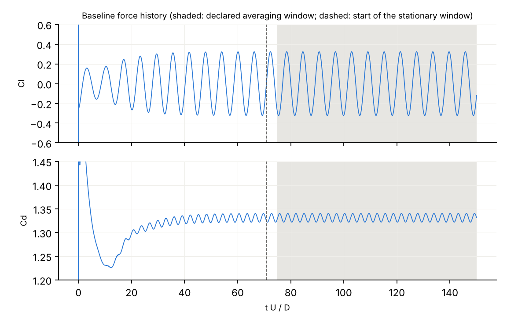

Simulation software can finish without a single error and still give the wrong number, because of a mesh that is too coarse, a domain that is too small, or a typo in the set-up. Today an expert catches this by running extra simulations by hand. This prototype automates that: it runs a simulation, gathers the evidence, decides whether the answer can be trusted to the requested accuracy, and runs targeted extra simulations when it cannot yet tell. An LLM may choose the next experiment, but it can never decide the verdict.
The four experiments are: refine the mesh, shrink the time step, enlarge the domain, run longer. Each result shows how far the answer moves, and that gives an uncertainty estimate (Richardson / Celik GCI). The loop repeats until the verdict is decisive or the budget runs out (≤ 6 experiments, ≤ 12× the original compute).
| Component | Status |
|---|---|
| Simulation pipeline, evidence extraction, deterministic verifier, 4 experiment primitives | done 99 unit tests and 8 OpenFOAM integration tests; every run content-addressed with full provenance |
| LLM critic and autonomous loop | done blind, schema-constrained, number-audited, authority-limited |
| Benchmark: 17 cases + 3 attack cases, 6 systems compared | running about one-third complete; roughly 10 more hours on the 4-core machine |
| Baseline validation and in-house reference | done four study stages, three adversarial fact-checks |
| Independent reviews | done 45 defects found and fixed before any result was used (code, evaluation, reports) |
| Final report (13 research questions, 5 pre-registered success criteria) | to do after the benchmark finishes |
The question: the time-mean drag coefficient and the shedding frequency (Strouhal number) of a 10 mm rod in a slow air stream, each to ±3 %. The benchmark has one careful baseline, two careful variants, two borderline variants, and twelve plausible-but-wrong set-ups: a coarse mesh, a domain that is too small, a large time step, a steady solver, the wrong viscosity, the wrong force reference, premature averaging, and others. Each case is scored against the in-house converged reference (page 3).
| System | What it does |
|---|---|
| A | OpenFOAM's own diagnostics only: solver completed, mesh check passed |
| B | The deterministic verifier on the single submitted run (no extra simulations) |
| L | The LLM judging the evidence of the single run: no checks, no experiments |
| C-rule | Adaptive: verifier + experiments chosen by a fixed rule list (statistics → mesh → time → domain) |
| C-llm | Adaptive: verifier + experiments chosen by the LLM critic (the full system) |
| Bexh | Fixed exhaustive protocol: run every experiment, then verify (tests whether adaptivity matters) |
These cases are wrong by more than 3 % whatever the reference uncertainty, or they solve the wrong problem. The correct verdict is REJECT. INCONCLUSIVE is safe but undecided. ACCEPT is a false acceptance, the dangerous outcome.
| Case | Flaw | A | B | L | C-rule | C-llm |
|---|---|---|---|---|---|---|
| A1 | mesh 2× too coarse (St −5 %) | ACCEPT ✗ | INCONCL. | REJECT ✓ | REJECT ✓ | running |
| B1 | domain far too small (Cd +15 %) | ACCEPT ✗ | INCONCL. | REJECT ✓ | REJECT ✓ | REJECT ✓ |
| B2 | domain too small (Cd +4 %) | ACCEPT ✗ | INCONCL. | REJECT ✓ | running | running |
| D1 | steady solver on a periodic flow | REJECT ✓ | REJECT ✓ | REJECT ✓ | REJECT ✓ | REJECT ✓ |
| F1 | first-order convection (St −23 %) | ACCEPT ✗ | INCONCL. | REJECT ✓ | running | running |
| H1 | dynamic viscosity entered (solves Re = 83) | ACCEPT ✗ | REJECT ✓ | REJECT ✓ | REJECT ✓ | REJECT ✓ |
| I1 | wrong force reference values (Cd −11 %) | ACCEPT ✗ | REJECT ✓ | REJECT ✓ | REJECT ✓ | REJECT ✓ |
| So far | 6 false accepts | 3 of 7 caught, 0 false | 7 of 7 | 5 of 5 decided | 4 of 4 decided | |
On B1 the static verifier cannot decide, and its checks all pass. The LLM critic read the evidence and asked for one experiment, enlarging the domain. Drag moved by 8.9 % and St by 6.7 %, both more than the 3 % tolerance, so the case was rejected. The fixed rule list reached the same verdict, but only after refining the mesh twice and halving the time step first.
This is the pre-registered "primary demonstration": OpenFOAM sees nothing wrong, the static verifier is inconclusive, and one targeted experiment exposes the flaw quantitatively.
Both systems reached the same verdict on each case: REJECT on B1, INCONCLUSIVE on the baseline. The LLM was 8× cheaper on B1 but more expensive on the baseline (cost $0.60 in LLM calls), so whether the LLM adds value overall is not settled until the benchmark finishes.
Scoring every case needs a "true" answer, and published values are only good to about 1 % because they come from finite domains and different codes. So the project built its own converged reference. It runs the baseline at finer meshes, smaller time steps and larger domains, and extrapolates each effect to zero (Richardson extrapolation).

Baseline lift (top) and drag (bottom) over 150 flow-through times. Shedding settles after about 70; the shaded window is the declared averaging window.
| Drag Cd | Strouhal St | |
|---|---|---|
| Baseline result | 1.3313 | 0.1634 |
| Reference (unbounded, converged) | 1.3155 ± 0.94 % | 0.1639 ± 0.46 % |
| Baseline error | +1.20 % | −0.31 % |
| Literature band (finite domains) | 1.31–1.33 | 0.164–0.166 |
The baseline is plausibly credible. Its best-estimate errors are inside half the tolerance (1.5 %), but the drag error's uncertainty range (0.27–2.14 %) crosses that line. At matched domain size, the reference agrees with published results within about 1 %, the scatter between codes.
| Stage | Reference drag | What it revealed |
|---|---|---|
| 1 | 1.3133 ± 0.7 % | large-domain runs had not settled |
| 2 | 1.3046 ± 1.2 % | settled runs; St time error resolved |
| 3 | 1.290 ± 6.3 % | domain study does not converge cleanly |
| 4 | 1.3155 ± 0.94 % | cause found: the outer mesh coarsens as the domain grows |
Getting a ±1 % reference took four stages and 13 extra simulations. Independent fact-checks of the draft reports pushed each step.